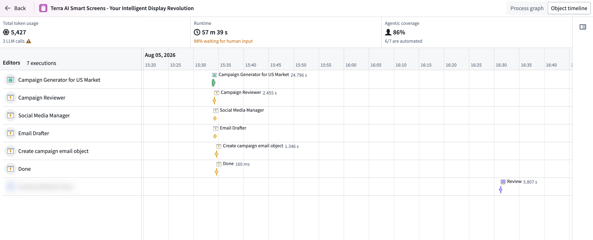
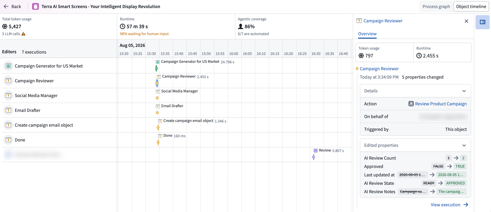

Object timeline
The object timeline view displays the full change history of a single object in chronological order, attributing each change to the agent or human that made it. This view helps you trace an edit back to the execution that produced it, review the token usage and runtime behind it, and identify steps to optimize.

To access the object timeline, do one of the following:

- In Object Explorer, choose More on an object view if edit history is turned on for your object.

Review object activity
The object timeline shows edits performed by agents or humans with full attribution for each change. You can:
- See which agents or humans acted on an object.
- Monitor token usage, agentic coverage, and runtime.
- Trace an edit back to the execution that produced it.
Review summary metrics
Summary metrics for the object give you a starting point for optimization:
- Total token usage: The number of tokens consumed across all executions.
- Total runtime: The length of time from the first to the last execution.
- Waiting time: The amount of time spent waiting for human input, shown in the same cell as total runtime.
- Agentic coverage: How much of the object's history was driven by agents versus humans.
Optimize your workflow
Use the timeline and the summary metrics to find where your workflow spends the most time and tokens:
- Token usage per step lets you quickly identify which steps consume the most, so you know where to focus, whether that is refining your prompt or switching models.
- At-a-glance time breakdown helps you spot where you are losing time in the run, so you can identify manual steps that could be automated to cut down overall workflow duration.
Explore the timeline
Each row in the timeline represents an agent or human that acted on the object:
- Bars: Represent executions.
- Diamond markers: Represent edits made to the object in the Ontology through an action.
The rows and markers are displayed together chronologically, showing how different actors worked on the same object over time. The timeline also helps you identify overlapping activity and understand when one execution picked up from another.

Select a bar or diamond marker to open a side panel with details about the selected activity, including:
- Execution metrics, such as token usage, runtime, and cost.
- The edits made to the object.
- The execution responsible for each edit.
Use the side panel to trace an object edit back to the execution and investigate the activity contributing to the object's overall runtime and cost.